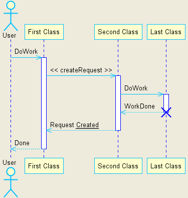
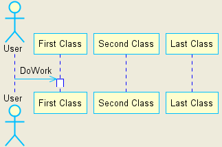
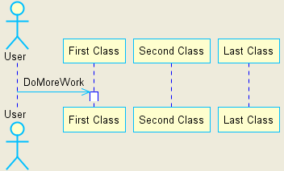

Being able to generate html/pdf documents with diagrams from vi or automaticaly is great for me. Many many thanks to docutils and plantuml developers for sharing their vision and the effort!
ASK: mauriciocap@gmail.com / http://www.mauriciocap.com.ar
SEE: http://plantuml.sourceforge.net/ Generate UML diagrams from text, runnable from a single jar!
SEE: http://docutils.sourceforge.net/ Conveniently write and generate documents in various output formats
SEE: http://code.google.com/p/rst2pdf/ Generate PDF output without latex in windows
WARNING: the directive EXECUTES an external program with an argument passed from the rst input file! Don't use it if to process input files you don't trust.
SEE: diagrams at http://plantuml.sourceforge.net/ , ALL should work as long as your plantuml installation works
USE the "uml" directive and write an indented block of PlantUML commands. No arguments are required, an image will be generated and inlined. The name is derived from the input line number, the generatd plantuml "source" is keep in the same directory.
The same here:
You can pass a filename for the image (WITHOUT extension) as an optional parameter.
This was a quick (but effective) hack :) In the near future I'd like to:
Please let me know how can I be of more help!